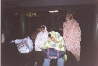
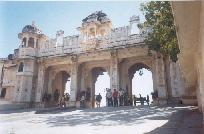
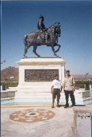
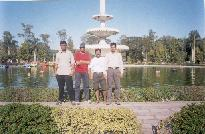
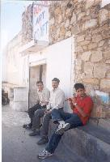
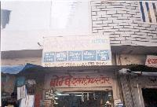
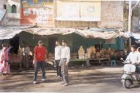
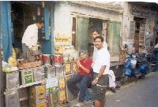
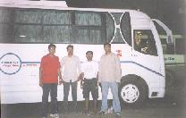
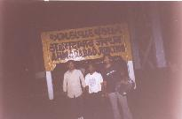

{kind=link}
{kind=link}
{kind=link}
{kind=link}
{kind=link}
{kind=link}
{kind=link}
{kind=link}
{kind=link}
{kind=link}
 to Bombay Central at 5am and tried to sleep some of the way. Finally gave up
at 10am. A couple of hours later the smell in the air indicated that we were
back in Mumbai, and got to Mumbai Central at 1pm.
to Bombay Central at 5am and tried to sleep some of the way. Finally gave up
at 10am. A couple of hours later the smell in the air indicated that we were
back in Mumbai, and got to Mumbai Central at 1pm.
All images are protected by copyright. Consult the copyright page for more information. No images may be reproduced without the consent of the respective copyright holders unless mentioned otherwise.
 We arrived at Udaipur bus station at 4:45am on the 28th. Had to find a place to have a wash before we started sight seeing and then to watch the SL/WI match after. Jacob and Mehta found a hotel across the road from the bus stand and we crashed there for a while. It was almost 6 when we checked in, so we all slept for an hour and woke up at 9 am.
Went for breakfast at 11. The rickshaw drivers in Udaipur have a 12 point program where they take you around to 12 sights for 150 bucks. We weren't interested in all 12 points so got him down to 125. In reality, only 2 places are worth visiting.
The first was gulab bagh. They have a rose garden and a zoo there. The rose garden was nice. The zoo wasn't very good, but it looked like they were renovating large parts of it.
 Next was the City Palace. It's a really cool place, but entrance and  photography charges are high. They have some very nice paintings in there. The doorways are low. It is said that this was to prevent enemies from storming in with force.
The City Palace is also the only place from where one can see the Palace on the Lake.
We then went to Chetak Samedhi. It is a memorial to Maharana Pratap's faithful steed who served him in battle many times. Chetak finally fell at the battle of Haldighat - shown in the engraving behind.
 After Chetak Samedhi, our route to the rest of the 12 points was blocked because  of Mahashivratri. We had to turn around, and the only place left was Sukadia Circle. We had Ganna Juice there, and then headed back.
Our rickshaw driver first took us to Rajasthan handloom in case we were interested in buying anything. We weren't. Sat around for a while and asked the boy who worked there were we could get good sweets and ghee. He directed us to JMB for sweets, and Dhan Mandi for the rest of our shopping.
 We set off for Dhan Mandi and let the rickshaw go. One of the first shops we saw here was Bombay Electrical. Swell! Went ahead in our pursuit of the best Rajasthani Ghee, but all we found was stuff from Haryana and Madhya Pradesh, and the stuff you get prepacked.
 Finally, we found a whole line of jaggery. Each of a different type and colour. We sampled all of them and bought the one we liked best. It was green.
 Moving on, we finally came across a Gaon ka Ghee walla. He had all the standard stuff, but also some ghee that was produce of Rajasthani villages. Bought two kilos - one for Jacob, and one for Me, and then went off in search of dates to take home.
As it turns out, the guy who sold dates was hanging around at the cobbler across the road. The Ghee walla called out to him, and he took us to sample his wares. He'd got these dates all the way from Afghanisthan. We liked them, and bought about six kilos in all.
 Then off to JMB to buy a kilo of fini, and back to the hotel - on foot. Well, we found our way. We also found Jodhpur sweet house on the way, and stopped to have Mawa Kachoris. It wasn't as good as we'd had in Jaipur.
That night we had Daal Bati for dinner. Mehta left for his house at 9:30, and we took the bus for Ahmedabad at 10:30

Arrived in Ahmedabad at 4:15am - outside the railway station. The rickshaw
drivers hounded us asking if we wanted a rickshaw. We asked if they'd go to
the station, and then told them to go there. Caught the train from Ahmedabad
to Bombay Central at 5am and tried to sleep some of the way. Finally gave up
at 10am. A couple of hours later the smell in the air indicated that we were
back in Mumbai, and got to Mumbai Central at 1pm.
Jacob's dad and brother were there to meet him. Joju and he went off to Wadala while I caught a local train to Bandra, and got home in time for the India/Pak match. It was most excellent.
In all, had an excellent time in Rajasthan, and all for just around Rs.3000. Yeah, we might have done a few things differently, but not too many. Hope you've had as much fun reading this as I've had writing it.